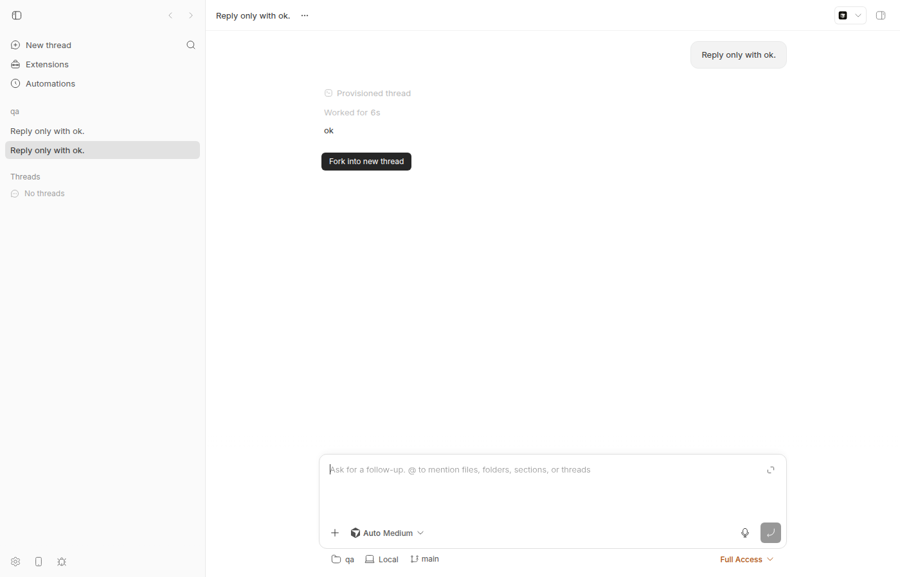
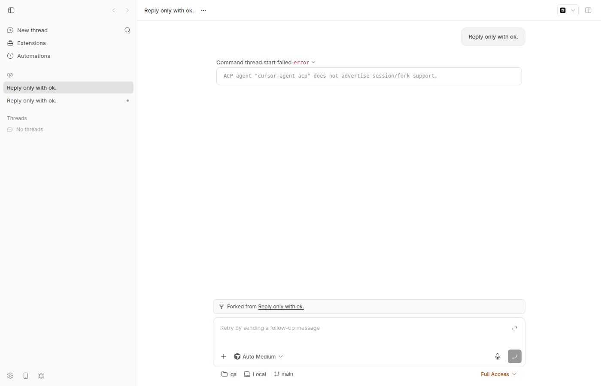

#1833 · acp-cursor advertises fork support it does not have; forking births an errored thread
Verdict: REPRODUCED · Root-cause confidence: high
1. TL;DR
A Cursor (acp-cursor) thread shows a "Fork into new thread" button, and bb thread fork accepts the request, but the forked thread immediately goes to status error with Command thread.start failed — ACP agent "cursor-agent acp" does not advertise session/fork support. The cause is a static capability declaration that disagrees with the agent: plugins/provider-acp/server.ts registers acp-cursor with fork: "tip", which the server projects to supportsFork: true for the API/app and for its own POST /threads/fork gate. The actual ACP initialize reply from cursor-agent (2026.08.11) advertises sessionCapabilities: { list: {} } and no fork, and the ACP bridge correctly refuses to send session/fork in that case — but that check happens only after the fork thread has already been created and started. The same tier-wide supportsFork: true fallback also applies to every known/custom ACP agent (e.g. acp-grok, which also advertises no fork), so the problem is broader than Cursor. Setting the Cursor declaration to fork: "none" makes the server reject the fork up front (HTTP 400) and hides the button; verified live.
2. Claims vs findings
| Claim from the issue | Status | Evidence |
|---|---|---|
The provider roster advertises supportsFork: true for acp-cursor | Verified | GET /api/v1/system/providers on the dev instance returns supportsFork: true for acp-cursor (providers-supportsFork.txt). Source: plugins/provider-acp/server.ts#L16-L26 declares fork: "tip", projected by plugin-provider-registration.ts#L84-L85. |
cursor-agent does not advertise ACP session/fork | Verified | Sent the exact initialize request bb's bridge sends to cursor-agent acp (2026.08.11-e8db854): agentCapabilities.sessionCapabilities = { list: {} }, no fork (cursor-initialize-result.txt). |
bb thread fork on a cursor thread births an errored thread with system/error: "does not advertise session/fork support" | Verified | Live repro below: fork returned 201 / thread thr_wgnhm8hhpy with status starting, then status: error and event seq 3 system/error {code: thread_command_failed, detail: 'ACP agent "cursor-agent acp" does not advertise session/fork support.'}. |
| The guard itself is correct; the roster capability is wrong | Verified | Guard at bridge.ts#L1724-L1730 reads the agent's real initialize answer. The declaration is the only thing saying "yes". |
| ACP fork works where the agent supports it (acp-opencode) | Unverified | opencode is not installed on this machine. Not needed for the bug; the bridge code path for a fork-capable agent was not exercised here. |
| Pre-existing on origin/main, not a cutover regression | Verified | Reproduced at base c7c66423d; fork: "tip" for acp-cursor was introduced in c5b53caab (#1640). No fix on origin/main as of 5f4172be3 (git log c7c66423d..origin/main -- plugins/provider-acp apps/server/src/services/providers is empty). |
Fix direction: project fork per-agent from sessionCapabilities.fork at initialize time | Partly | Sound in principle, but the ACP agent initialize happens per session inside the bridge, after the bridge handshake, and the server's supportsFork/ProviderInfo are static declarations with no daemon→server capability channel. See §6 for a cheaper correct fix and the larger one. |
3. Environment
- bb
c7c66423d55c320bab9103218f0ffef1a8191331(main, 2026-08-20); Linux 7.0.0-29-generic; node v24.18.0 - cursor-agent
2026.08.11-e8db854at~/.local/bin/cursor-agent; grok CLI (for contrast) at~/.local/bin/grok; opencode not installed - Dev instance from this worktree: App
http://localhost:14875, Serverhttp://localhost:22875, Host daemon127.0.0.1:30875, data dir~/.bb-dev/projects-bb-.claude-worktrees-wf_926b3193-f6c-10-ad7768632be1(deleted after the run); host idhost_ychzpg73cy; projectproj_thd6gcvyyyon scratch repo/tmp/bb-1833-qa-repo
4. Minimal reproduction
A. Prove the agent does not advertise fork (no bb needed)
- Run probe-cursor-acp-initialize.mjs, which spawns
cursor-agent acpand sends the sameinitializerequest as bb's bridge:$ node probe-cursor-acp-initialize.mjs { "protocolVersion": 1, "agentCapabilities": { "loadSession": true, "mcpCapabilities": { "http": true, "sse": true }, "promptCapabilities": { "audio": false, "embeddedContext": false, "image": true }, "sessionCapabilities": { "list": {} } }, "authMethods": [ { "id": "cursor_login", "name": "Cursor Login", "description": "Authenticate using existing Cursor login credentials. Run 'agent login' first if not logged in." } ] } sessionCapabilities.fork advertised: falseExpected (for the roster to be right):sessionCapabilities.forkpresent. Actual: onlylist. For contrast,grok agent stdio(provideracp-grok, also advertised withsupportsFork: true) repliessessionCapabilities: { list, resume, close }— no fork either (grok-initialize-result.txt).
B. Live repro through the CLI
- Start a dev instance (
scripts/bb-dev-app current),eval "$(scripts/bb-dev-app env)", create a project on a scratch git repo (see brief), then spawn a Cursor thread and wait for it:$ pnpm bb:dev thread spawn --project proj_thd6gcvyyy --provider acp-cursor --machine host_ychzpg73cy \ --environment /tmp/bb-1833-qa-repo --prompt "Reply only with ok." --json { "id": "thr_7wvkgmjn97", "providerId": "acp-cursor", "status": "starting", ... } $ pnpm bb:dev thread wait thr_7wvkgmjn97 --status idle --timeout 180 Thread thr_7wvkgmjn97 reached status idle. - Check what the server advertises:
$ curl -s $BB_SERVER_URL/api/v1/system/providers | python3 -c 'import json,sys; [print(p["id"], p["capabilities"]["supportsFork"]) for p in json.load(sys.stdin)]' codex True claude-code True pi True acp-cursor True <-- wrong acp-grok True <-- also wrong (grok advertises no session/fork)
- Fork the thread:
$ pnpm bb:dev thread fork thr_7wvkgmjn97 --workspace reuse --prompt "Reply only with ok." --json { "id": "thr_wgnhm8hhpy", "sourceThreadId": "thr_7wvkgmjn97", "originKind": "fork", "status": "starting", ... } expected: HTTP 400 "Provider acp-cursor does not support thread forks" (no thread created), or a working forked session. actual: 201, a new thread is created, then ~1s later: $ pnpm bb:dev thread show thr_wgnhm8hhpy Thread: thr_wgnhm8hhpy Status: error $ pnpm bb:dev thread log thr_wgnhm8hhpy --json # event seq 3: { "type": "system/error", "data": { "code": "thread_command_failed", "message": "Command thread.start failed", "detail": "ACP agent \"cursor-agent acp\" does not advertise session/fork support." } }Raw outputs: step1-spawn.txt, step2-fork.txt, step3-fork-status.txt, step3-fork-log.json.

ProviderInfo.capabilities.supportsFork is true.
thr_wgnhm8hhpy, "Forked from Reply only with ok.") immediately shows Command thread.start failed — ACP agent "cursor-agent acp" does not advertise session/fork support. and the composer says "Retry by sending a follow-up message".C. Unit-level repro (fails on base, passes with the fix)
apps/server/test/services/plugins/issue-1833-acp-cursor-fork.test.ts (uses the real plugin runtime and in-memory SQLite via the existing withTestHarness):
import { describe, expect, it } from "vitest";
import { listSystemProviderInfos } from "../../../src/services/system/execution-options.js";
import { withTestHarness } from "../../helpers/test-app.js";
/**
* Repro for get-bb/bb#1833.
*
* cursor-agent's ACP `initialize` result (cursor-agent 2026.08.11) advertises
* `sessionCapabilities: { list: {} }` and no `fork`, so the ACP bridge refuses
* every `thread/fork` for it ("does not advertise session/fork support").
* The server-side declaration in plugins/provider-acp/server.ts nevertheless
* says `fork: "tip"`, so the registry, `POST /threads/fork` and the app all
* offer fork for acp-cursor, and every fork births an errored thread.
*
* On c7c66423d the two assertions below FAIL (supportsFork is `true`).
* They pass once the acp-cursor declaration says `fork: "none"` (or the
* capability is otherwise derived from what the agent actually advertises).
*/
describe("issue #1833: acp-cursor fork capability", () => {
it("does not advertise fork for acp-cursor", async () => {
await withTestHarness(
{ seedFirstPartyProviders: false },
async (harness) => {
const entry = await harness.pluginService.install(
"builtin:provider-acp",
{ kind: "root" },
);
expect(entry.status, entry.statusDetail ?? "").toBe("running");
const registry = harness.deps.providerRegistry;
// Server-side gate used by POST /api/v1/threads/fork.
expect(registry.supportsFork("acp-cursor")).toBe(false);
// Client-facing ProviderInfo used by the app's fork affordance.
const infos = await listSystemProviderInfos(harness.deps, {});
const cursor = infos.find((info) => info.id === "acp-cursor");
expect(cursor?.capabilities.supportsFork).toBe(false);
},
);
}, 60_000);
});
$ cd apps/server && pnpm exec vitest run test/services/plugins/issue-1833-acp-cursor-fork.test.ts # on c7c66423d
RUN v4.1.1 /home/sawyer/projects/bb/.claude/worktrees/wf_926b3193-f6c-10/apps/server
❯ @bb/server test/services/plugins/issue-1833-acp-cursor-fork.test.ts (1 test | 1 failed) 375ms
× does not advertise fork for acp-cursor 374ms
⎯⎯⎯⎯⎯⎯⎯ Failed Tests 1 ⎯⎯⎯⎯⎯⎯⎯
FAIL @bb/server test/services/plugins/issue-1833-acp-cursor-fork.test.ts > issue #1833: acp-cursor fork capability > does not advertise fork for acp-cursor
AssertionError: expected true to be false // Object.is equality
- Expected
+ Received
- false
+ true
❯ test/services/plugins/issue-1833-acp-cursor-fork.test.ts:32:53
30|
31| // Server-side gate used by POST /api/v1/threads/fork.
32| expect(registry.supportsFork("acp-cursor")).toBe(false);
| ^
33|
34| // Client-facing ProviderInfo used by the app's fork affordanc…
❯ withTestHarness test/helpers/test-app.ts:289:12
❯ test/services/plugins/issue-1833-acp-cursor-fork.test.ts:21:5
⎯⎯⎯⎯⎯⎯⎯⎯⎯⎯⎯⎯⎯⎯⎯⎯⎯⎯⎯⎯⎯⎯⎯⎯[1/1]⎯
Test Files 1 failed (1)
Tests 1 failed (1)
Start at 14:40:54
Duration 3.02s (transform 1.47s, setup 0ms, import 2.55s, tests 375ms, environment 0ms)
With the one-line fix applied the same test passes (vitest-with-fix.txt). The assertion that fails is registry.supportsFork("acp-cursor") === false: the server's own fork gate says yes, because the declaration says "tip".
Repro files: 1833/repro/
5. Root cause
Two sources of truth disagree and the wrong one is consulted first.
- Static declaration says yes. plugins/provider-acp/server.ts#L16-L26 registers
acp-cursorwithfork: "tip". plugin-provider-registration.ts#L79-L85 projects that tosupportsFork: capabilities.fork !== "none"→truein the client-facingProviderInfo, and keepsfork: "tip"inserverCapabilities. The registry's supportsFork() returns that boolean. The app reads it in useForkThreadFromMessage.ts#L50-L56 / ThreadDetailView.tsx#L993 and shows the fork action. - Server gate trusts the declaration and creates the thread. thread-fork.ts#L35-L46 (
requireForkCapableProvider) passes, socreateThreadForkFromRequestinserts a new thread withoriginKind: "fork"and dispatchesthread/startwith a fork request to the host daemon. - Runtime/adapter also trusts it. In the daemon, bridge-protocol-adapter.ts#L208-L227 computes the effective fork ladder as
min(declaredFork, handshake.fork); the ACP bridge's handshake answersfork: "tip"unconditionally (bridge.ts#L2357-L2383, comment: "each agent's support is verified per session at agent initialize"), so thethread/forkgate at #L333-L350 lets the request through. - The only honest check is last. The bridge spawns
cursor-agent acp, sends ACPinitialize, and at bridge.ts#L1724-L1730 throwsdoes not advertise session/fork supportbecauseagentCapabilities.sessionCapabilities.forkis absent. That error propagates as the thread'ssystem/error {code: thread_command_failed}and the already-created thread lands inerror.
Deeper issue. The whole ACP tier declares fork unconditionally: ACP_TIER_CAPABILITIES.supportsFork = true / ACP_FORK = "tip" is the registry's fallback for every known agent (acp-grok, acp-omp, acp-hermes-agent, acp-opencode) and every custom acp-* agent. Grok, verified above, advertises no session/fork either, so acp-grok has the identical failure. Per-agent variation already has a precedent in this code base: supportsManualCompaction is declared per agent in known-acp-agents.ts and in customAcpAgents config, resolved through resolveAcpAgentCapabilitiesForProviderId. Fork simply was not given the same treatment.
Why the issue's "derive it from the agent at initialize" is not a drop-in: the ACP initialize is sent per session, inside the bridge, after the bridge↔runtime handshake and after the server has already created the thread; and the server's supportsFork / ProviderInfo are static and have no daemon→server capability channel. Doing it dynamically would mean spawning the agent once to probe capabilities and plumbing the result up through the host daemon protocol (and a HOST_DAEMON_PROTOCOL_VERSION bump).
6. Proposed fix (first principles)
Minimal, verified: change fork: "tip" → fork: "none" in plugins/provider-acp/server.ts#L19 (diff). With this applied and the dev instance restarted: GET /system/providers reports acp-cursor supportsFork: false; bb thread fork thr_7wvkgmjn97 ... returns HTTP 400: Provider acp-cursor does not support thread forks and creates no thread (step4-fork-after-fix.txt); the "Fork into new thread" action no longer renders on the cursor thread (the screenshot script's waitForSelector('button[aria-label="Fork into new thread"]') times out); and the repro test passes. The adapter's declared ceiling also becomes "none", so even a direct thread/fork to the runtime is rejected before the agent is spawned. Risk: if a future cursor-agent adds session/fork, fork stays off until the declaration is flipped back — acceptable, it is a declaration just like supportsManualCompaction.
Complete fix (same change, applied to the tier): add a per-agent fork: ProviderFork (or supportsFork: boolean) to KnownAcpAgent and to the customAcpAgents config schema (default "none", mirroring supportsManualCompaction), return it from resolveAcpAgentCapabilitiesForProviderId, make providerRegistry.supportsFork/getServerCapabilities for dynamic acp-* ids read it instead of ACP_TIER_CAPABILITIES, and have buildAcpProviderInfo take fork from the agent record so the API/app agree. Set acp-opencode to "tip" (the issue says it works there) and the rest to "none" until verified. This touches only the server (product policy per AGENTS.md) and changes no wire shape between server and daemon, so no protocol bump is needed. Update docs/configuration.md for the new custom-agent field.
Optional hardening: a server-side preflight in thread-fork.ts cannot see the agent; leave the bridge guard in place as the last line of defense.
7. PR review
No open pull requests are linked to this issue.
8. Related issues
- #1500 Forked threads have an empty timeline — fork should clone source events (fork UX; independent of this capability bug).
- #1512 Nest fork threads under their source in the sidebar.
- #1640 (c5b53caab) introduced the
fork: "tip"declaration for acp-cursor and the tier-widesupportsFork: true. plans/narrow-grammar-protocol.mdfinding 2 — the QA note this issue was filed from.
9. Appendix
Grok ACP initialize (excerpt, for the tier-wide point)
{
"protocolVersion": 1,
"agentCapabilities": {
"loadSession": true,
"promptCapabilities": {
"image": false,
"audio": false,
"embeddedContext": true
},
"mcpCapabilities": {
"http": true,
"sse": true
},
"sessionCapabilities": {
"list": {},
"resume": {},
"close": {}
}
...
Commands run (condensed)
pnpm install --frozen-lockfile --prefer-offline
pnpm exec turbo run build
node /tmp/bb-reports/issues/1833/repro/probe-cursor-acp-initialize.mjs # cursor-agent acp
node /tmp/bb-reports/issues/1833/repro/probe-cursor-acp-initialize.mjs grok agent stdio
scripts/bb-dev-app current ; scripts/bb-dev-app env
git -C /tmp/bb-1833-qa-repo init ... commit
curl -s -X POST $BB_SERVER_URL/api/v1/projects -d '{"name":"qa","source":{"type":"local_path","path":"/tmp/bb-1833-qa-repo","hostId":"host_ychzpg73cy"}}'
pnpm bb:dev thread spawn --project proj_thd6gcvyyy --provider acp-cursor --machine host_ychzpg73cy --environment /tmp/bb-1833-qa-repo --prompt "Reply only with ok." --json
pnpm bb:dev thread wait thr_7wvkgmjn97 --status idle --timeout 180
pnpm bb:dev thread fork thr_7wvkgmjn97 --workspace reuse --prompt "Reply only with ok." --json
pnpm bb:dev thread show thr_wgnhm8hhpy ; pnpm bb:dev thread log thr_wgnhm8hhpy --json
doobie --headless run /tmp/bb-reports/issues/1833/repro/screenshot.js ; ... screenshot-source.js
sed -i 's/fork: "tip"/fork: "none"/' plugins/provider-acp/server.ts ; scripts/bb-dev-app stop ; scripts/bb-dev-app current
curl -s $BB_SERVER_URL/api/v1/system/providers | ... # acp-cursor False
pnpm bb:dev thread fork thr_7wvkgmjn97 --workspace reuse --prompt "Reply only with ok." --json # HTTP 400
cd apps/server && pnpm exec vitest run test/services/plugins/issue-1833-acp-cursor-fork.test.ts # pass with fix, fail on base
git checkout plugins/provider-acp/server.ts
git fetch origin main ; git log c7c66423d..origin/main --oneline -- plugins/provider-acp apps/server/src/services/providers apps/server/src/services/threads/thread-fork.ts # empty
pnpm dev:stop ; rm -rf ~/.bb-dev/projects-bb-.claude-worktrees-wf_926b3193-f6c-10-ad7768632be1 /tmp/bb-1833-qa-repo
Full fork-thread event log
step3-fork-log.json — seq 1 client/turn/requested, seq 2 client/thread/start, seq 3 system/error (quoted above).